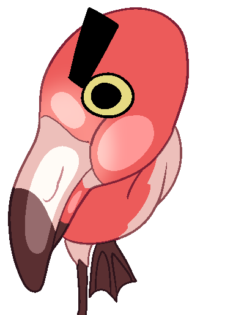
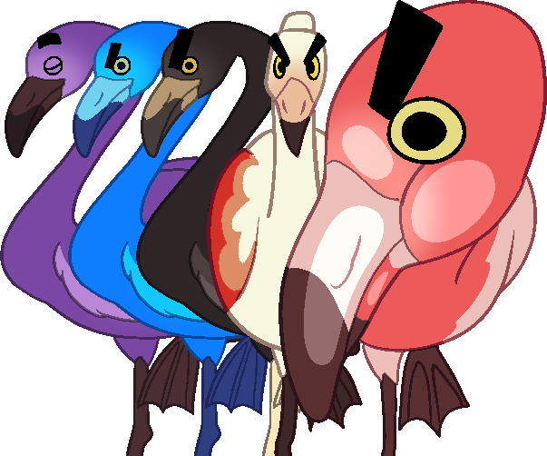
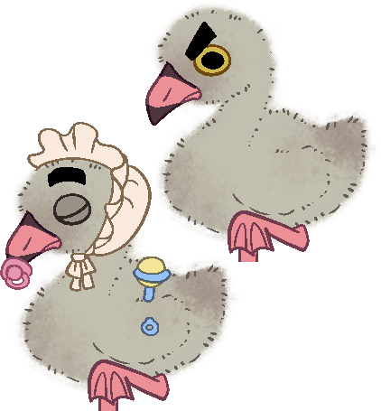
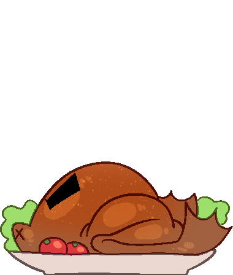
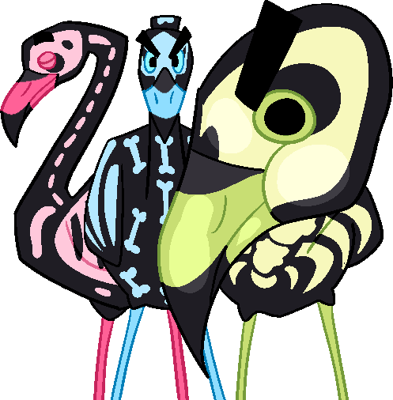
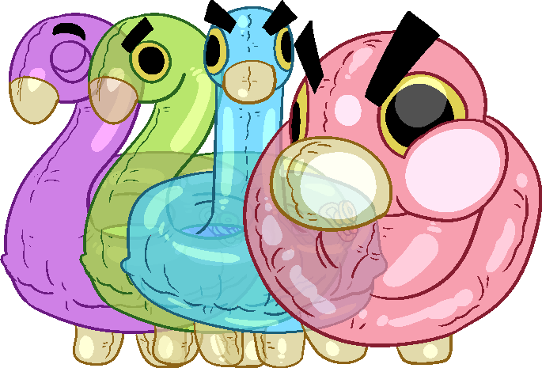
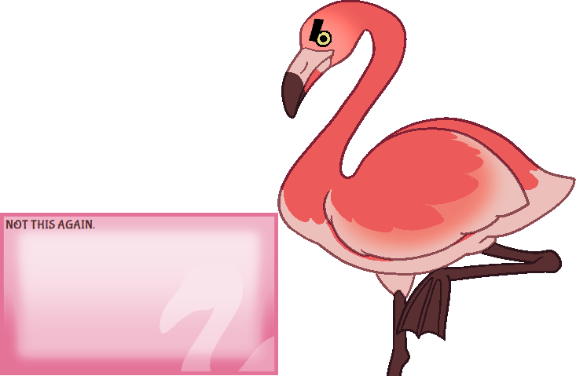
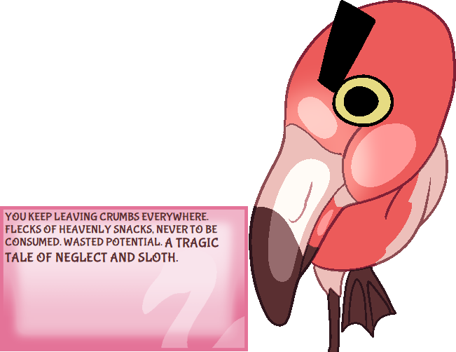

If I Can't Have Shrimp No One Can

If I Can't Have Shrimp No One Can is a ghost of a very mean flamingo made for Idea Adoption Jam 2023 by myself, Galehaut, and Zichqec. It uses the Tropical Plastic balloon.
Features
- Dynamic petting based talk rates
- Pinkest of pinks (and other lesser colors)
- Bottomless stomach
- Multiple flamingo styles
- Gives meaning to your sad life (the meaning is petting flamingos)
 
